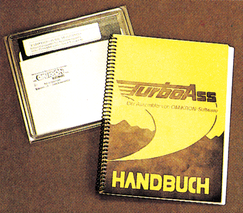
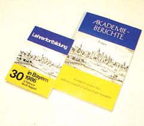
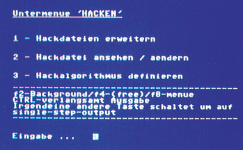

Aktuelles
Turbo-Ass jetzt mit Macros
Turbo-Ass, der von den Entwicklern, Omikron Software, als der schnellste Assembler für den C 64 bezeichnet wird, gibt es jetzt in einer erheblich verbesserten Version.
»Turbo-Ass Macro +« bietet auch die Programmierung von Assembler-Macros. Macros dürfen sich selbst oder andere aufrufen. Die Parameter-Übergabe ist sehr komfortabel, es können sogar Op-Codes als Parameter verwendet werden. Damit man Labels mehrfach benutzen kann, sind auch Blockstrukturen kein Problem. Bedingte Assemblierung und Assemblerschleifen sind ebenso möglich, wie variable Label und Einbindung von Unterprogrammen von Diskette. Zu guter Letzt wurden weitere Befehle zur komfortablen Tabellenerzeugung integriert.
Trotz dieser Zusatzfunktionen sind fast alle anderen Eigenschaften des Turbo-Ass erhalten geblieben: Geringer Speicherverbrauch, sehr schnelle Assemblierung, integrierter komfortabler Full-Screen-Editor. Auch der Preis ist derselbe: »Turbo-Ass Macro + « kostet immer noch 139 Mark. Wer schon den alten »Turbo-Ass« hat, kann ihn für 20 Mark gegen die neue Version austauschen. (bs) Info: Turbo-Ass Macro + , Omikron-Software, Erlachstr. 15, 7534 Birkenfeld, Tel. 0 70 82/53 86, 139 Mark

Video-Verteiler
Bei Schulungen, Messen und Ausstellungen tritt häufiger das Problem auf, einen Computer-Bildschirm mehreren Leuten sichtbar zu machen. Mit geringem Aufwand soll dies mit einem Videoverteiler von GES möglich sein. Das Gerät soll über einen Standard-BAS-Eingang mit 75-Ohm-Impedanz und zehn Ausgänge verfügen. Es sollen zwei bis zehn Monitore angeschlossen werden können. Die eingebaute Elektronik soll den Pegel der Videosignale konstant halten, das heißt, das Ursprungssignal wird nicht überlastet.
(hm)Info: GES, H. Graf, Postfach 1610, 8960 Kempten, Tel. 0831/6211
Neue Software zum Trommeln
Besitzer der »Digital Drums« beziehungsweise der »RSC Drums« können nun mit neuer Software noch mehr aus ihrer Trommelplatine herausholen. »Digital Micro Rhythm« ist ein sehr komfortabler Rhythmus-Editor mit Real-Time-Eingabemöglichkeit.
»Digital Micro Drum« ist ein Programm, das die Ansteuerung der acht Trommelsounds über Drum-Pads oder Midi-Synthesizer und -Sequencer erlaubt.
Zwei Sound-Disketten mit insgesamt 120 neuen, digitalisierten Sounds sorgen für eine große Trommelvielfalt. Speziell für Midi-Synthesizer in Kombination mit dem C 64 gibt es »Digital Midi Drum«. Über den Synthesizer können 27 verschiedene Sounds angesprochen werden.
Wer in Stereo trommeln möchte: Eine Stereo-Version der Platine und Software namens »Digital Micro Rhythm S +« gibt es ebenfalls. 12 verschiedene Trommelklänge stehen hier zur Verfügung. (bs)
Info: von Quadt Studio, Hamacher/Missing GbR, Von-Quadt-Str. 41, 5000 Köln 80, 02 21/6814 57
Digital Micro Rhythm: 89 Mark
Digital Micro Drum: 89 Mark
beide Programme mit Drum-Platine: 249 Mark
Digital Midi Drum (ohne Platine): 76 Mark Sound-Disks 1 & 2: je 59 Mark
Digital Micro Rhythm S + : 249 Mark
Neuer »Hand-Held«-Joystick
Aus England kommt ein Steuerknüppel mit sehr ungewöhnlicher Form. Der Konix-Joystick ist für Zwei-Hand-Betrieb konzipiert: Die linke Hand hält den Joystick und betätigt den Feuerknopf, die rechte steuert. In der Redaktion haben wir den Konix kurz aber intensiv getestet: Der Konix ist sehr präzise wie auch schnell. Die manuell erreichbare Feuergeschwindigkeit ist dafür etwas geringer als bei herkömmlichen Joysticks. Der Konix eignet sich für alle Arten von Spielen, weniger für Zeichenprogramme. Bei längerem Spielen kann es zu Ermüdungen und Krämpfen in der Halte-Hand kommen. Obwohl der Konix sehr zerbrechlich aussieht, ist er ungemein stabil: Mikroschalter und Stahlkern im Griff sorgen für ungetrübtes Spiel-Vergnügen. Unsere Meinung: Ein Joystick, den man in Erwägung ziehen sollten. Sicherheitshalber sollte Sie ihn vor dem Kauf mal in die Hand nehmen, ob er Ihrer Handgröße entspricht.
(bs)Info: Konix-Joystick, Rushware, An der Gümpgesbrücke 24, 4044 Kaarst 2, etwa 60 Mark
Lehrerfortbildung
Die Akademie für Lehrerfortbildung in Dillingen sorgt für die Aus- und Fortbildung im Bereich »Computertechnik im Unterricht«.
Momentan werden Computer im Unterricht schwerpunktmäßig in den Fächern Informatik und Technik eingesetzt. Der Computer bietet aber auch in Biologie, Physik und Chemie fantastische Möglichkeiten. Diese Erkenntnis und die ständig steigende Nachfrage nach Fortbildungskursen für Computertechnik, veranlaßte die Akademie für Lehrerfortbildung die Seminarangebote zu erhöhen.
Physikalische Experimente sollen mit Computerunterstützung eindrucksvoller vorgeführt werden und der Computer soll auch die Durchführung von Experimenten gestatten, die bisher im Unterricht nicht durchgeführt werden konnten.
Solche Probleme will die Akademie für Lehrerfortbildung in Dillingen lösen. Der Akademiebericht (Bild) »Computerpraxis bei naturwissenschaftlichen Experimenten« und die Fortbildungsseminare sollen interessierte Lehrer in die Lage versetzen einen Computer zu programmieren (CBM 4000, 8000 oder C 64) und Schnittstellen sinnvoll einzusetzen.
Der Akademiebericht soll keinesfalls das Studium von Gerätehandbüchern oder Lehrmaterialien zur Informatik ersetzen. Das Ziel des Berichts war zu zeigen, wie mit geringem finanziellen und technischem Aufwand der Computer als Hilfsmittel im Unterricht eingesetzt werden kann.
Anleitungen zum Selbstbau von Zusatzgeräten nehmen einen relativ breiten Raum ein. Die dabei vorgeschlagenen Schaltungen sind nicht exklusiv für »Bastler« gedacht, sondern sollen vor allem dem Verständnis von Meß- und Steuervorgängen mit Computerhilfe dienen. Allerdings wendet sich dieser Akademiebericht hauptsächlich an solche Leser, für die Tastatur und Bildschirm nicht die einzigen Kommunikationsmittel zum Mikrocomputer sind. Methodische Folgerungen und die Diskussion von weiteren Einsatzmöglichkeiten von Computeranlagen sind zwar häufig Gegenstand der Fortbildungsveranstaltungen, in diesem Bericht zur Begrenzung des Gesamtumfanges jedoch nicht enthalten.
Neben dem Bau von einfacher Hardware wird eine Reihe von Programmen hierzu erläutert. Dabei kam es den Autoren weniger auf Programmoptimierung, als auf das Verständlichmachen ihres Grundgerüstes an. Der Bericht bringt ferner auch die Grundlagen des Aufbaus und der Bedienung einer Mikrocomputeranlage, soweit sie zum Verständnis und zur Durchführung der Experimente, Simulationen un der sonstigen Programme nötig sind.
Dieser 240 Seiten starke Akademiebericht ist nicht nur für Lehrer sehr interessant. Er kann gegen Rechnung oder Scheck bestellt werden und kostet 17 Mark.
(do)Info: Akademie für Lehrerfortbildung, Kardinal-von Waldburg-Straße 6, 8880 Dillingen a. d. Donau, Tel.0 90 71/20 30

Neuer Viza-Distributor
Der Exklusivvertrieb der gesamten Viza-Produktpalette für den deutschen Sprachraum wurde von Data Technology Management (DTM) in Wiesbaden übernommen. Wie der Viza-Hersteller Microtron mitteilte, wurde die abgelaufene Distributorvereinbarung mit der Münchener Firma Interface Age nicht verlängert. Für DTM habe man sich aufgrund guter Erfahrungen mit dieser Firma im Software-Service der Viza-Produkte Vizawrite und Vizastar im letzten Jahr entschieden.
(Detlev Hoppenrath/hm)Neue Prozessorgeneration
Schnellen Datentransfer zwischen RAMs, I/O-Bausteinen und CPU erlaubt der neu von ProzessLogic entwickelte Chip 72017. Das ist ein 16-Bit-Mikroprozessor, der nach dem Packed-Data-Transfer-Prinzip arbeitet. Diese Art des Datenverkehrs zwischen Speicher und CPU erlaubt eine bis zu 40 Prozent höhere Arbeitsgeschwindigkeit des Prozessors gegenüber normalen 16-Bit-Typen wie dem 68000.
Kurz die Funktion: Normalerweise wird die Adresse auf den Bus gelegt und dann über die 16 Datenleitungen ein 16-Bit-Datum (Word) in die selektierte Speicherzelle geschrieben oder von dort gelesen. Selbst wenn für einen Code nur fünf l-Bits gebraucht werden, müssen alle Datenleitungen angesteuert werden, auch die, die nur 0-Bits übertragen. Deutlich anders funktioniert der 72017. Durch eine ausgeklügelte Schaltung mit einem raffinierten Timing (MMU 72022) ist es ProzessLogic gelungen, den Adreßbus so zu multiplexen, daß über die eigentlich brachliegenden Datenleitungen schon das nächste Word, zumindest teilweise, gelesen werden kann. Werden für zwei aufeinanderfolgende 16-Bit-Words nur je acht l-Bits benötigt, können mit einem Datenzugriff beide gleichzeitig geschrieben oder gelesen werden.
Besonders interessant ist die Stackverarbeitung des 72017, der nach dem FINO-Prinzip (First in, Never out) arbeitet. Hier ist der Progammierer endlich nicht mehr gezwungen vor einer RTS-Anweisung eventuelle PHP-Befehle rückgängig zu machen. Das macht der 72017 automatisch. Außerdem wird so eine beliebige Schachtelung von Unterprogrammebenen ohne Stack-Überlauf möglich.
Würde Commodore den 68000 des Amiga durch einen 72017 ersetzen, könnte man eine durchschnittliche Geschwindigkeitserhöhung von 30 Prozent feststellen. Diskettenzugriffe würden sogar um durchschnittlich 60 Prozent beschleunigt.
Außerdem arbeitet der 72017 mit den neuen Assoziativ-Speichern (AAM = »Associative Access Memory«) zusammen. Diese Speicher sind ein neuer Schritt vorwärts in der Speicher-Technik. Im Gegensatz zu normalen RAMs, die bei Angabe einer Adresse den Inhalt auf den Datenbus legen, gibt ein AAM bei Angabe eines Inhalts die dazugehörige Adresse auf den Adreßbus. AAM-Chips gibt es augenblicklich schon in einer 2764-pinkompatiblen Version mit der Bezeichnung 27AR64 und 27AW64. Die AR-Version (Associative Read) verhält sich bei der Programmierung wie ein normales EPROM, während die AW-Version (Associative Write) wie ein normales RAM beschreibbar ist. Anwendungsgebiet ist beispielsweise Textverarbeitung. Suchoperationen im Text (sogenanntes »Search and Replace«) werden um das bis zu 250fache beschleunigt. Eine Vizawrite-Version, die mit 27AW64 zusammenarbeitet, soll in Vorbereitung sein.
(bs/hm)Info: ProzessLogic, c/o H. Meyer, Joh.-Seb.-Bach-Str. 1, 8013 Haar, Tel. 0 89/4 613106
Der vollautomatische Hacker
Jetzt werden auch die Hacker wegrationalisiert!
Das Programm HANS (Hackers Network Service, Bild) übernimmt nun die Hauptarbeit eines jeden Hackers — das ständige Ausprobieren von Paßwörtern und Kennungen, um sich in andere Rechnersysteme einzuschleichen.
HANS besteht aus vier Teilen: Einem Notizblock für Hacker, einem Bereich, in dem alle für die Datenfernübertragung notwendige Parameter eingestellt werden, einer Datenverwaltung für Paßwörter und als wichtigstes — eine neue Computersprache namens SHIT (Symbolic Hack-Instructions for Computer-Terms).
Damit lassen sich sogenannte Hack-Algorithmen definieren, die dem Hacker mühsame Arbeiten abnehmen, wie beispielsweise das Anwählen von Teilnehmernummern und Ausprobieren von Paßwörtern. Bis zu 30000 Paßwörter lassen sich — sortiert auf maximal hundert Dateien — dabei verwalten. HANS kann eine Datei durchprobieren oder auch alle. Zwanzig Dateien gibt es zu HANS. Laut Angabe des Herstellers läßt sich damit eine Erfolgsquote von 33 Prozent erreichen.
Das gesamte Programm ist menügesteuert und sehr anwenderfreundlich. Die zur Verfügung stehenden DOS-Operationen und das implementierte Terminalprogramm lassen nur noch wenige Wünsche offen.
Ein ausführliches Handbuch wird mitgeliefert (rund 170 Seiten). Viele Beispiele und Übungen helfen Ihnen, den Umgang mit HANS schnell zu erlernen.
Für 128 Mark erhält man ein nahezu vollständig ausgereiftes Hacker-System. Update-Versionen mit Ergänzungen zum Handbuch sollen später einmal für 10 Mark zu bekommen sein.
Übrigens: Nach neuen Gesetzesvorlagen soll das Ausprobieren von Paßwörtern strafbar sein!
(B.H.P./kn)
Das Abenteuer lockt
In dem 4. Sonderheft der 64’er-Reihe geht es um Adventures, zu deutsch: Abenteuerspiele. Zwei große Bereiche bestimmen den Inhalt dieses Sonderheftes: Der ausführliche Programmier-Kurs und eine Reihe von Super-Adventures zum Abtippen.
Wer selbst programmieren will, bekommt in unserem ausführlichen Programmierkurs jede Menge Informationen von einem Fachmann: Michael Nickles, unter anderem bekannt durch Gordon Saga, hat auf fast 100 Seiten alles zusammengestellt, was man wissen muß, um Adventures zu programmieren. Er beantwortet ausführlich, wie ein Computer deutsche Eingaben versteht oder wie man ganze Sätze decodiert. Natürlich werden auch fertige Routinen vorgestellt, die die ganze Arbeit übernehmen.
Der Kurs beschreibt auch, wie man den Speicherplatz auf Diskette bei langen Adventures optimal nutzt, Texte speichert und verwaltet, und wie man hochinteressante Grafiken in Abenteuerspiele einbaut.
Ein Thema, das auf den ersten Blick nicht viel mit Adventures gemein zu haben scheint, ist »Künstliche Intelligenz«. Wie verwandelt man seinen Computer in eine »Denkmaschine«? Wie schreibt man Adventures, die »denken« können? Diese Fragen werden ebenfalls ausführlich beantwortet.
Ein paar Themen sind auch für alle Programmierer, nicht nur für die Adventure-Fans, interessant: Deutscher Zeichensatz für den Commodore 64, Dateiverwaltung nicht nur für Adventures sowie viele Tips&Tricks.
Damit man auch etwas spielen kann, bevor man sich sein eigenes Abenteuerspiel schreibt, haben wir die besten Adventure-Listings, die von unseren Lesern eingeschickt wurden, in diesem Sonderheft zusammengefaßt: Die Themen reichen von einer deutschen Version eines Hobbit-ähnlichen Spiels, über das Bestehen schwieriger Zauberprüfungen, einem Gefängnisausbruch und einem spannenden Krimi bis hin zur Strandung auf einer einsamen Insel.
Das 64’er-Sonderheft 4/86 »Abenteuerspiele« ist ab März im Zeitschriftenhandel.